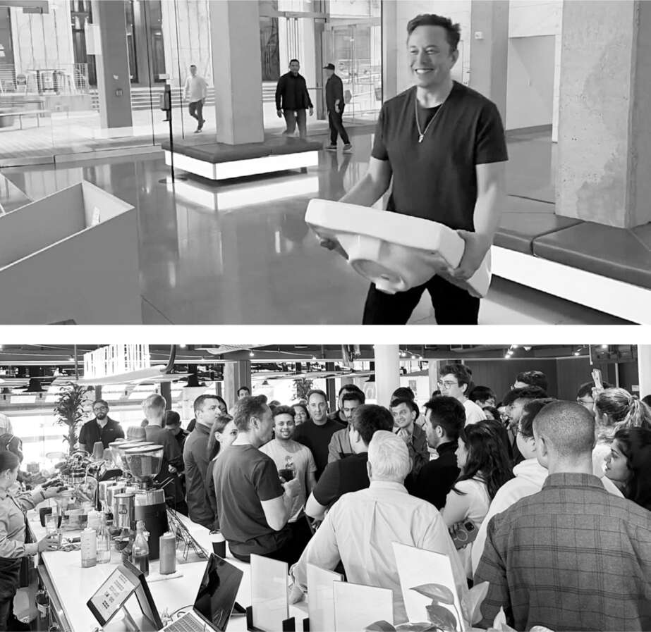

Sự xung đột văn hóa
Trong những ngày trước khi tiếp quản Twitter vào cuối tháng 10 năm 2022, tâm trạng của Musk thay đổi thất thường. "Tôi rất hào hứng khi cuối cùng cũng được triển khai X.com đúng như nó phải thế, sử dụng Twitter như một chất xúc tác!", ông nhắn tin cho tôi vào lúc 3:30 sáng một cách bất ngờ. "Và, hy vọng là, góp phần vào nền dân chủ và đối thoại văn minh trong khi làm như vậy." Nó có thể trở thành sự kết hợp giữa nền tảng tài chính và mạng xã hội mà ông đã hình dung hai mươi tư năm trước cho X.com, và ông quyết định đổi tên thương hiệu thành cái tên mà ông yêu thích. Vài ngày sau, ông trở nên trầm ngâm hơn. "Tôi sẽ phải sống tại trụ sở Twitter. Đây là một tình huống cực kỳ khó khăn. Thực sự khiến tôi buồn bã:( Khó ngủ."
Ông đã lên lịch đến thăm trụ sở Twitter ở San Francisco vào thứ Tư, ngày 26 tháng 10, để tìm hiểu và chuẩn bị cho việc chính thức hoàn tất thương vụ vào cuối tuần đó. Parag Agrawal, CEO điềm đạm của Twitter, đứng ở sảnh tầng hai, chuẩn bị chào đón ông. "Tôi rất lạc quan", ông nói khi chờ Musk bước vào. "Elon có thể truyền cảm hứng cho mọi người làm những điều lớn lao hơn chính họ." Ông tỏ ra thận trọng, nhưng tôi nghĩ ông ấy tin vào điều đó. Giám đốc tài chính, Ned Segal, người đã có cuộc gặp căng thẳng với Musk vào tháng 5, đứng cạnh ông với vẻ mặt hoài nghi hơn.
Sau đó, Musk bước vào mang theo một cái bồn rửa mặt và cười lớn. Đó là một trong những trò đùa hình ảnh mà ông thích thú. "Hãy để điều đó thấm nhuần!", ông kêu lên. "Hãy cùng tiệc tùng nào!" Agrawal và Segal mỉm cười.
Musk có vẻ kinh ngạc khi đi dạo quanh trụ sở Twitter, tòa nhà mười tầng theo phong cách Art Deco từng là trung tâm thương mại được xây dựng vào năm 1937. Nơi này đã được cải tạo theo phong cách công nghệ hiện đại với các quầy cà phê, phòng tập yoga, phòng tập thể dục và khu trò chơi điện tử. Quán cà phê rộng lớn trên tầng chín, với sân hiên nhìn ra Tòa thị chính San Francisco, phục vụ các bữa ăn miễn phí từ bánh mì kẹp thịt thủ công đến salad chay. Biển báo nhà vệ sinh ghi "Đa dạng giới được chào đón tại đây", và khi Musk lục lọi tủ chứa đầy hàng hóa mang thương hiệu Twitter, ông tìm thấy những chiếc áo phông in dòng chữ "Hãy tỉnh táo", thứ mà ông vẫy tay như một ví dụ về tư duy mà ông tin rằng đã lây nhiễm vào công ty. Trong khu vực hội nghị ở tầng hai, nơi Musk trưng dụng làm đại bản doanh của mình, có những chiếc bàn gỗ dài bày đầy đồ ăn nhẹ và năm loại nước, bao gồm nước đóng chai từ Na Uy và nước đóng lon Liquid Death. "Tôi uống nước máy", Musk nói khi được mời một lon.
Đó là một cảnh mở đầu đáng ngại. Người ta có thể cảm nhận được sự xung đột văn hóa đang manh nha, như thể một chàng cao bồi gai góc bước vào quán Starbucks.
Vấn đề không chỉ nằm ở cơ sở vật chất. Giữa Twitterland và Muskverse là sự khác biệt căn bản trong quan điểm phản ánh hai tư duy khác nhau về môi trường làm việc của người Mỹ. Twitter tự hào là một nơi thân thiện, nơi sự quan tâm được coi là một đức tính tốt. "Chúng tôi chắc chắn rất đồng cảm, rất quan tâm đến sự hòa nhập và đa dạng; mọi người đều cần cảm thấy an toàn ở đây", Leslie Berland, giám đốc tiếp thị và nhân sự cho đến khi bị Musk sa thải, cho biết. Công ty đã thiết lập chế độ làm việc tại nhà vĩnh viễn và cho phép một "ngày nghỉ ngơi" tinh thần mỗi tháng. Một trong những từ thông dụng thường được sử dụng tại công ty là "an toàn tâm lý". Mọi người đều cẩn thận để không gây khó chịu cho nhau.
Musk cười cay đắng khi nghe cụm từ "an toàn tâm lý". Nó khiến ông khó chịu. Ông coi đó là kẻ thù của sự khẩn trương, tiến bộ, tốc độ. Từ thông dụng ưa thích của ông là "cứng rắn". Ông tin rằng sự khó chịu là một điều tốt. Đó là vũ khí chống lại tai họa của sự tự mãn. Kỳ nghỉ, ngửi hoa, cân bằng cuộc sống công việc và những ngày "nghỉ ngơi tinh thần" không phải là thứ của ông. Hãy suy nghĩ về điều đó.
Cà phê rất nóng
Chiều thứ Tư đó, mặc dù chưa hoàn tất việc mua lại, Musk vẫn tổ chức các cuộc họp đánh giá sản phẩm. Tony Haile, một giám đốc sản phẩm người Anh, đồng sáng lập một công ty khởi nghiệp từng cố gắng bán đăng ký gói tin tức trực tuyến, đã hỏi về việc khiến người dùng trả tiền cho báo chí. Musk nói rằng ông thích ý tưởng về các khoản thanh toán nhỏ dễ dàng mà người dùng có thể thực hiện để xem video hoặc đọc một câu chuyện. "Chúng tôi muốn xây dựng một cách để những người làm truyền thông được trả công cho công việc của họ", ông nói. Ông đã tự kết luận rằng đối thủ cạnh tranh lớn nhất của Twitter sẽ là Substack, nền tảng trực tuyến mà các nhà báo và những người khác đang sử dụng để xuất bản nội dung và được người dùng trả tiền.
Trong giờ giải lao, Musk quyết định đi dạo quanh tòa nhà để gặp gỡ nhân viên. Người hướng dẫn của ông tại Twitter trông có vẻ lo lắng và nói với ông rằng không có nhiều người xung quanh vì nhân viên thích làm việc tại nhà. Đó là giữa chiều thứ Tư, nhưng không gian làm việc gần như vắng tanh. Cuối cùng, khi đến quầy espresso ở tầng mười, ông thấy vài chục nhân viên trông có vẻ do dự và giữ khoảng cách. Với một số lời động viên từ người hướng dẫn, cuối cùng họ cũng tập trung lại.
"Bạn có thể cho nó vào lò vi sóng và hâm nóng nó lên thật nóng không?", ông hỏi khi nhận được cà phê. "Nếu nó không thật nóng, tôi sẽ uống quá nhanh."
Esther Crawford, người phụ trách phát triển sản phẩm giai đoạn đầu, háo hức trình bày ý tưởng về một ví điện tử trên Twitter dùng cho các khoản thanh toán nhỏ. Musk gợi ý rằng số tiền trong ví có thể được gửi vào tài khoản lãi suất cao. "Chúng ta cần biến Twitter thành hệ thống thanh toán số một thế giới, giống như tôi từng muốn làm ở X.com", ông nói. "Một ví điện tử kết nối với tài khoản thị trường tiền tệ chính là mấu chốt tạo nên sự đột phá."
Cũng lên tiếng, dù có phần dè dặt, là Ben San Souci, một kỹ sư trẻ người Pháp. "Tôi có thể trình bày ý tưởng trong 19 giây không?", anh hỏi. Ý tưởng của anh xoay quanh việc tận dụng cộng đồng để kiểm duyệt ngôn từ kích động thù địch. Musk chen ngang với ý tưởng cho phép người dùng tùy chỉnh mức độ hiển thị của các tweet. "Một số người thích xem những thứ dễ thương, số khác lại thích tranh luận gay gắt." Đó không hẳn là điều San Souci muốn nói, nhưng khi anh định giải thích thêm, một người phụ nữ lên tiếng và anh đã làm một điều đáng ngạc nhiên đối với một kỹ sư công nghệ: anh nhường lời cho cô. Cô đặt câu hỏi mà mọi người đang thắc mắc: "Ông có định sa thải 75% nhân viên không?". Musk cười và ngừng lại. "Không, con số đó không phải do tôi đưa ra", ông trả lời. "Những tin đồn vô căn cứ này cần phải chấm dứt. Nhưng chúng ta đang đối mặt với thách thức. Nền kinh tế đang suy thoái, doanh thu thấp hơn chi phí, vì vậy chúng ta phải tìm cách tăng doanh thu hoặc giảm chi phí."
Đó không hẳn là một lời phủ nhận. Trong vòng ba tuần, con số ước tính 75% đó hóa ra lại chính xác.
Khi Musk từ quán cà phê xuống tầng hai, ba phòng họp đã chật kín các kỹ sư trung thành từ Tesla và SpaceX. Theo chỉ đạo của Musk, họ đang xem xét mã nguồn của Twitter và vẽ sơ đồ tổ chức trên bảng trắng để quyết định giữ lại những nhân viên nào. Hai phòng khác là nơi làm việc của đội ngũ luật sư và chuyên gia tài chính của ông. Họ dường như đang chuẩn bị cho một cuộc chiến.
"Ông đã nói chuyện với Jack chưa?", Gracias hỏi Musk. Đồng sáng lập kiêm cựu CEO của Twitter, Jack Dorsey, ban đầu ủng hộ Musk mua lại công ty, nhưng vài tuần gần đây đã trở nên lo lắng trước những tranh cãi và sóng gió. Dorsey lo Musk sẽ phá hủy đứa con tinh thần của mình. Anh không chắc mình có muốn chấp nhận điều đó hay không. Quan trọng hơn, anh do dự việc chuyển đổi cổ phiếu Twitter của mình sang cổ phần trong công ty tư nhân mới do Musk kiểm soát. Nếu anh không chuyển đổi cổ phần, điều đó có thể ảnh hưởng đến kế hoạch tài chính của Musk. Musk đã gọi cho anh gần như hàng ngày trong tuần qua, trấn an Dorsey rằng ông thực sự yêu Twitter và sẽ không làm hại nó. Cuối cùng, ông đã đạt được thỏa thuận với Dorsey: nếu anh chuyển đổi cổ phần, Musk sẽ cam kết trả anh đủ giá trong tương lai nếu anh cần tiền. "Anh ấy đã đồng ý chuyển đổi toàn bộ", Musk nói. "Chúng tôi vẫn là bạn bè. Anh ấy lo lắng về thanh khoản trong tương lai, nên tôi đã hứa với anh ấy ở mức giá 54,20 đô la."
Cuối buổi chiều, Agrawal lặng lẽ bước vào khu vực sảnh tầng hai và tìm thấy Musk. Họ sẽ đối đầu như những đấu sĩ vào đêm hôm sau, nhưng lúc này cả hai đều tỏ ra thân thiện.
"Chào anh", Agrawal nhẹ nhàng nói. "Hôm nay của anh thế nào?"
"Đầu tôi đầy ắp thông tin", Musk trả lời. "Tôi cần một giấc ngủ để xử lý tất cả."

Bước vào trụ sở Twitter và ghé thăm quán cà phê trên tầng mười